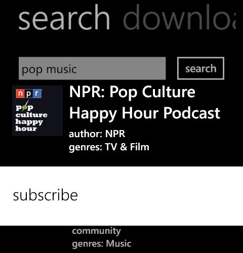
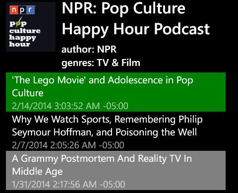

PodCricket
takes the shortest way to your favourite podcasts...
|
PodCrickettakes the shortest way to your favourite podcasts... |
You can search you favorite podcasts by going to "search" on main page, type your terms and click search. Search result should be shown right after few seconds, depends on your network connection. It shows podcast name, author and geners. If you want to see details, simply tap on that podcast, it would take you to podcast details page.
Tip: If this is the right podcast you want to subscribe, simply tap and hold it to see "subscribe" context menu. You can do a directly subsribe there.

The first time you see podcast details page, it just contains name, author and generes.On the application bar, there're two button: refresh to see all posts and subcribe to this podcast. If you subscribe to a podcast, PodCricket should remember it and put it into "subscribed" tab. Everytime you open PodCricket, you should be able to quickly access your subscribed podcasts.
"Refresh" helps you to view list of all posts belong to this podcast. Everytime you tap "refresh", it would update the post list. There're 2 significant post colors:
Gray: the post is being downloaded
Green: post already downloaded

Tips: you can tap and hold on each post to see its context menu:
- add to download: queue this post to download list. PodCricket should automatically download this post per your configure (which has "just download with wifi connection" as default)
- add to play: add this post to play list so that you can back to play list page and play this post. If a post hasn't been downloaded, you still can play it from remote resource, but its performance depends on your network connection.
- delete downloaded file: this just appears to post which was downloaded. After you delete downloaded post, this post still be there but its state is something likes "has not been download"
Tips: you can swipe from left to right to back to main page
Tap on a post would take you to post details page.
This page contains summary of a post so you can review and decide if you want to download or not.
Tips: you can swipe from left to right/right to left to navigate to next/previous posts of the current podcast.
This page contains all your download posts. For downloading post, you can tap and hold to cancel it. There're several options in configure to control this page:
- "auto queue post": after PodCricket finishes download a post, it then queue this post to play list
- "auto remove downloaded post": after PodCricket finishes download a post, it then remove this post from download page. So download page just contains posts are being downloaded
- "download with wifi": just download when there's a wifi connection
Tips: you can tap a post to see its details or tap and hold a post to put it into play list
If you already put some posts into play list, you can tap on it to select it as current playing item. New version 1.2 supports video playing. You can monitor track time and can seek track position using progress bar.
- "show as grid": this config is applied to "subscribed" section in main page. It would show your subscribed podcasts as grid rather than items list.
- "auto queue post": after PodCricket finishes download a post, it then queue this post to play list
- "play post in app": play post in app in "play" section in main page. If you turn off this option, you would play post using default media app of your phone.
- "auto resume post": this option helps you to quickly resume back to last position you was playing before quitting PodCricket.
- "auto remove downloaded post": after PodCricket finishes download a post, it then remove this post from download page. So download page just contains posts are being downloaded
- "download with wifi": just download when there's a wifi connection
- "auto backup": if this option turned on, it always create a backup file of your main data file. This help us to recover your data in case you accidentally lost it.
- "keep screen on": this options prevent screen turned off after some (configured) idle time while you're playing a post. This help you keep listening/watching your post without any iterruption.
Free standard version doesn't support video. If you want to follow video podcasts, you need to purchase pro version with other cool features.
If you have any questions or feedback, please don't hesitate to contact davangsolutions@outlook.com. We shall provide response as quick as possible.
Happy podcasting!
DaVang Solutions 2014